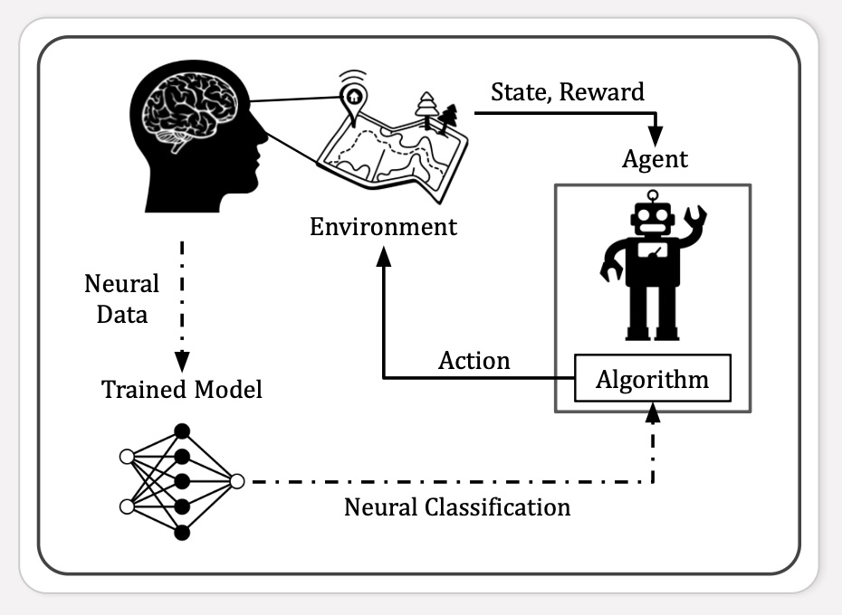
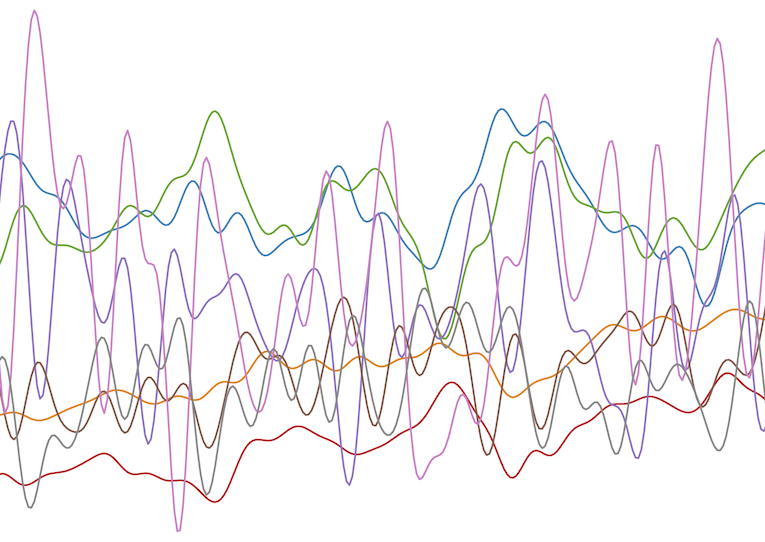
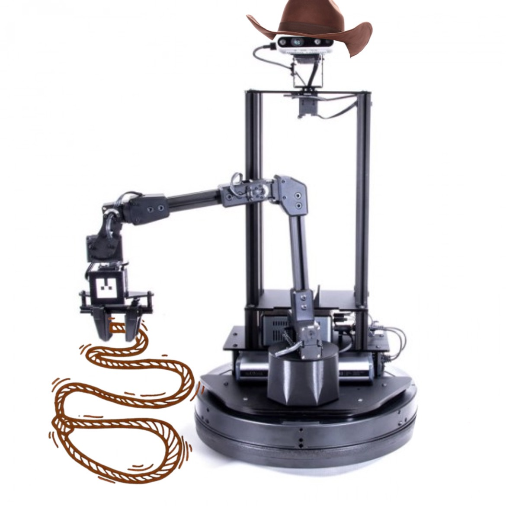
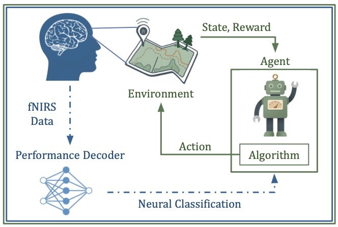

Projects
Brain-computer interfaces, human-in-the-loop reinforcement learning, and a bit of robot tracking. Open a project for the writeup and papers.

Offline NEURO-LOOP
fNIRS, reinforcement learning
A reinforcement learning framework that folds implicit neural feedback into robot policy learning, using an offline dataset rather than a live loop.

Mapping fNIRS to Agent Performance
RLDM 2025, AAAI 2026
Whether passive prefrontal fNIRS can track how well an agent is doing, and whether that signal is usable as feedback.

SpheroHunter
Robotics
A LoCoBot follows a Sphero through a maze by guessing where it went when the walls hide it.
NEURO-LOOP in progress
Hybrid fNIRS–EEG, real time
The live version of the loop: multimodal biosignals used to update a robot policy while a person is watching.
